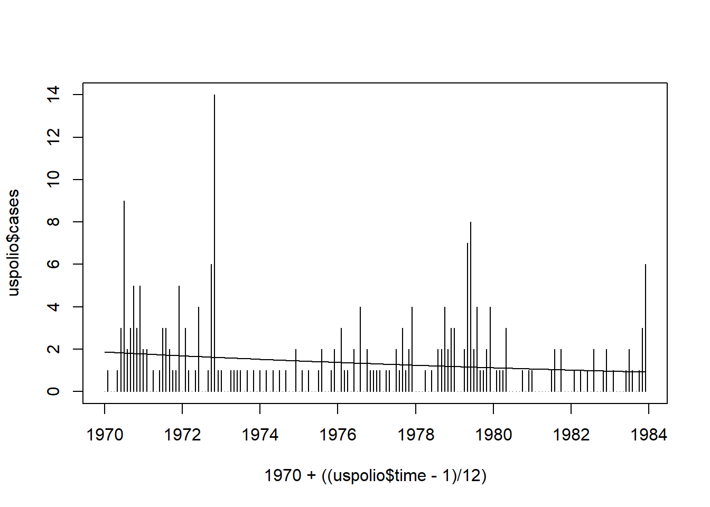
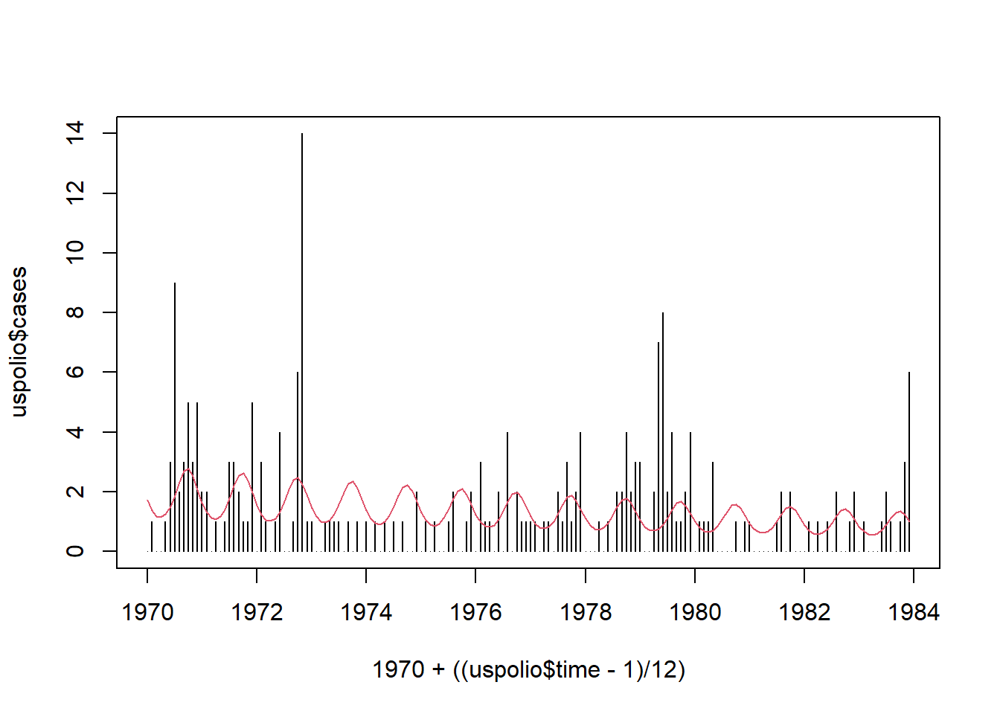
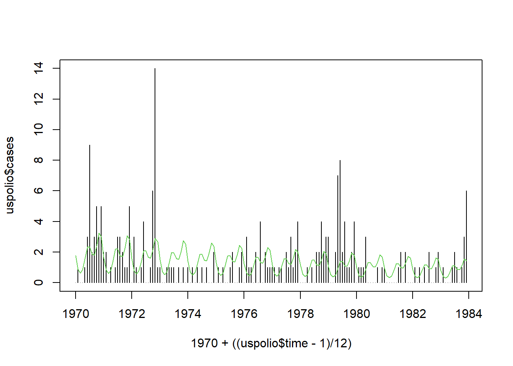
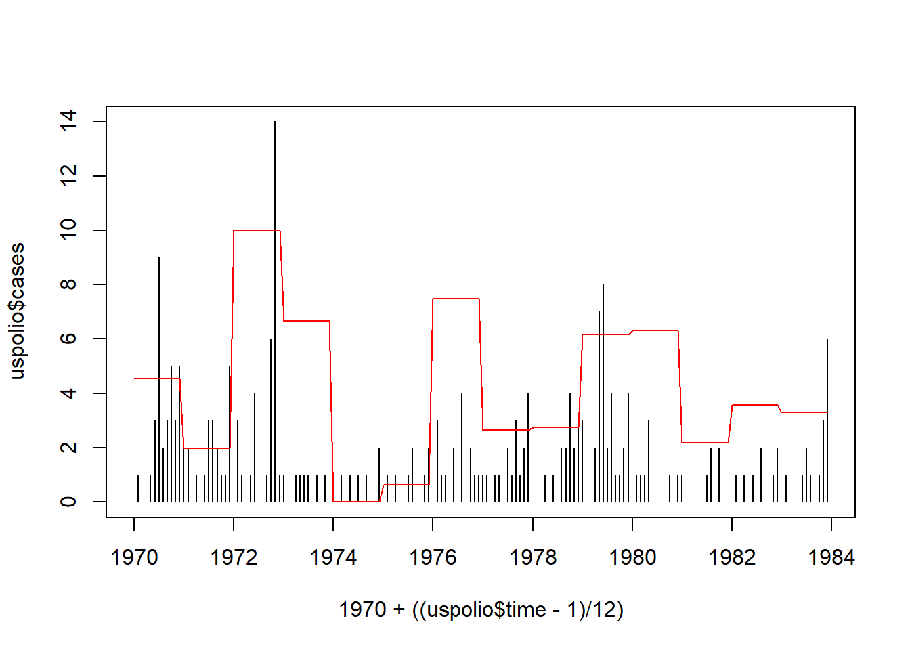
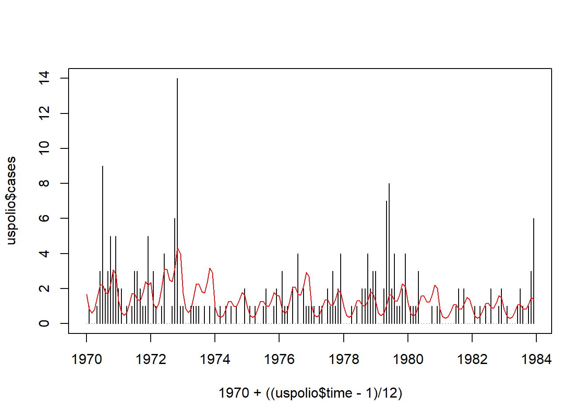
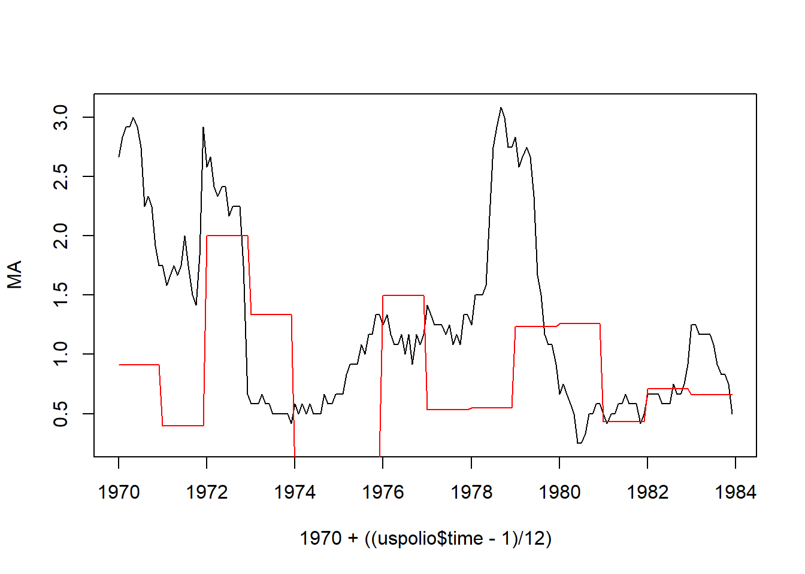

Chapter 2 Estimation
2.1 Likelihood
Consider the grouped data setup where we have predictors and data with possible replicates \(\left\{(\boldsymbol{x}_{i}, y_{ir_{i}})\right\}_{i\in[1..n], r_{i}\in[1..m_{i}]}\). Recall that under a GLM, given predictors \(\left\{\boldsymbol{x}_{i}\right\}_{i\in[1..n]}\), each response \(y_{ir_{i}}\) is independent of the other \(y_{jr_{j}}\), and of the values of all predictors \(\boldsymbol{x}_{j}\) with \(j\neq i\), so that the joint probability of the data — that is, the likelihood — is given by \[\begin{equation} L(\boldsymbol{\beta}) = P_{}\left(\left\{y_{ir_{i}}\right\} |\left\{\boldsymbol{x}_{i}\right\}, \boldsymbol{\beta}\right) = P_{}\left(\left\{y_{ir_{i}}\right\} |\left\{\theta_{i}\right\}, \phi\right) = \prod_{i = 1}^{n} \prod_{r_{i} = 1}^{m_{i}} P_{}\left(y_{ir_{i}} |\theta_{i}, \phi\right) \tag{2.1} \end{equation}\] where \[\begin{equation} P_{}\left(y_{ir_{i}} |\theta_{i}, \phi\right) = \exp \left( \frac{y_{ir_{i}}\theta_{i} - b(\theta_{i})}{ \phi} + c(y_{ir_{i}}, \phi) \right) \end{equation}\] with \[\begin{equation} \theta_{i} = (b')^{-1}(\mu_{i}) = (b')^{-1}(h(\eta_{i})) = (b')^{-1}(h(\boldsymbol{\beta}^{T}\boldsymbol{x}_{i})) \end{equation}\]
2.2 Log-Likelihood
The log probability of the data — or log-likelihood — is thus given by \[\begin{align} l(\boldsymbol{\beta}) & = \log P_{}\left(\left\{y_{ir_{i}}\right\} |\left\{\theta_{i}\right\}, \phi\right) \\ & = \sum_{i} \sum_{r_{i}} \left( \frac{y_{ir_{i}}\theta_{i} - b(\theta_{i})}{\phi} + c(y_{ir_{i}}, \phi) \right) \\ & = \sum_{i} \left( m_{i} \frac{y_{i}\theta_{i} - b(\theta_{i})}{\phi} + \sum_{r_{i}} c(y_{ir_{i}}, \phi) \right) \\ & = \sum_{i} l_{i} \end{align}\]
where \[\begin{equation} l_i = \frac{y_{i}\theta_{i} - b(\theta_{i})}{\phi_i} + \sum_{r_{i}} c(y_{ir_{i}}, \phi) \end{equation}\] \[\begin{equation} \phi_i = \phi/m_i \end{equation}\] and \[\begin{equation} y_i = \frac{1}{m_i} \sum_{r_{i}} y_{ir_{i}} \end{equation}\]
2.3 Score Function and Equation
The score function is given by \[\begin{equation} \boldsymbol{S}(\boldsymbol{\beta}) = \frac{\partial l }{ \partial \boldsymbol{\beta}^{T}} = \sum_{i} \frac{\partial l_{i} }{ \partial \boldsymbol{\beta}^{T}} = \sum_{i} \frac{\partial l_{i} }{ \partial \theta_{i}} \frac{\partial \theta_{i} }{ \partial \mu_{i}} \frac{\partial \mu_{i} }{ \partial \eta_{i}} \frac{\partial \eta_{i} }{ \partial \boldsymbol{\beta}^{T}} \tag{2.2} \end{equation}\] where, recalling that \(\mu_i = b'(\theta_i)\), \(\mu_i = h(\eta_i)\) and \(\eta_i = \boldsymbol{\beta}^T\boldsymbol{x}_i\), we have1: \[\begin{align} \frac{\partial l_{i} }{ \partial \theta_{i}} & = \frac{y_{i} - b'(\theta_{i})}{ \phi_{i}} = \frac{y_{i} - \mu_{i}}{ \phi_{i}} \\ \frac{\partial \theta_{i} }{ \partial \mu_{i}} & = \frac{\partial (b')^{-1} }{ \partial \mu_{i}} = \frac{1 }{ b''((b')^{-1}(\mu_{i}))} = \frac{1 }{ \mathcal{V}(\mu_{i})} = \frac{1 }{ b''(\theta_{i})} \tag{2.3}\\ \frac{\partial \mu_{i} }{ \partial \eta_{i}} & = h'(\eta_{i}) \tag{2.4}\\ \frac{\partial \eta_{i} }{ \partial \boldsymbol{\beta}^{T}} & = \boldsymbol{x}_{i} \end{align}\]
The score function is thus given by \[\begin{align} \boldsymbol{S}(\boldsymbol{\beta}) & = \sum_{i} \left( \frac{y_{i} - \mu_{i}}{ \phi_{i}} \right)\; \left( \frac{1 }{ \mathcal{V}(\mu_{i})} \right)\; h'(\eta_{i})\;\boldsymbol{x}_{i} \\ & = \frac{1}{\phi}\sum_{i} m_{i}(y_{i} - \mu_{i})\;\frac{1}{ \mathcal{V}(\mu_{i})}\; h'(\eta_{i})\;\boldsymbol{x}_{i} \tag{2.5} \end{align}\]
The maximum likelihood estimate \(\hat{\boldsymbol{\beta}}\) must then satisfy the score equation: \[\begin{equation} \boldsymbol{S}(\hat{\boldsymbol{\beta}}) = 0 \tag{2.6} \end{equation}\]
Note that the dispersion parameter \(\phi\) cancels from the score equation, which implies that \(\hat{\boldsymbol{\beta}}\) does not depend on \(\phi\). This is another important property of EDFs.
2.3.1 Natural Link
For the natural link, \(\theta_{i} = \eta_{i}\), so Equations (2.3) and (2.4) combine to give \[\begin{equation} \frac{h'(\eta_i)}{\mathcal{V}(\mu_i)} = \frac{\partial\theta_{i}}{\partial \mu_{i}} \frac{\partial\mu_{i}}{\partial \eta_{i}} = \frac{\partial\theta_{i}}{\partial \eta_{i}} = 1 \end{equation}\] The score function thus simplifies to \[\begin{equation} \boldsymbol{S}(\boldsymbol{\beta}) = \frac{1}{\phi}\sum_{i} m_{i}(y_{i} - \mu_{i})\;\boldsymbol{x}_{i} \tag{2.7} \end{equation}\]
2.4 Fisher Information
For future developments, we will also need the second derivative of the log likelihood. Up to a change of sign, this is called the Observed Fisher Information, defined as \[\begin{equation} \boldsymbol{F}_{\text{obs}}(\boldsymbol{\beta}) = - \frac{\partial^{2} l }{ \partial\boldsymbol{\beta}^{T}\partial\boldsymbol{\beta}} = - \frac{\partial \boldsymbol{S}}{\partial \boldsymbol{\beta}} \tag{2.8} \end{equation}\] Note that, at the MLE, \(\boldsymbol{F}_{\text{obs}}(\hat{\boldsymbol{\beta}})\) is positive by definition. Because it is a function of the data \(\left\{y_{i}\right\}\), \(\boldsymbol{F}_{\text{obs}}\) has a probability distribution. In practice, the Observed Fisher Information is often approximated by the Expected Fisher Information2, otherwise known simply as the Fisher Information: \[\begin{equation} \boldsymbol{F}(\boldsymbol{\beta}) = E \left[ - \frac{\partial \boldsymbol{S} }{ \partial \boldsymbol{\beta}} \right] \tag{2.9} \end{equation}\]
where the expectation is taken over the joint probability distribution of the data \(P_{}\left(\left\{y_{ir_{i}}\right\} |\boldsymbol{\beta}, \left\{\boldsymbol{x}_{i}\right\}\right)\).
2.5 Example: Poisson Regression
We look at two example calculations of the score function and Fisher Information for Poisson Regression, that is we have
- \(y |\boldsymbol{x}, \boldsymbol{\beta} \sim \text{Poi}(\lambda(\boldsymbol{x}))\)
- \(\phi = 1\)
2.5.1 With Natural Link
We have that
- \(\lambda(\boldsymbol{x}) = \mu(\boldsymbol{x}) = h(\eta(\boldsymbol{x})) = e^{\eta(\boldsymbol{x})} = e^{\boldsymbol{\beta}^T\boldsymbol{x}}\)
Equation (2.7) then gives: \[\begin{equation} \boldsymbol{S}(\boldsymbol{\beta}) = \sum_{i} (y_{i} - e^{\boldsymbol{\beta}^{T}\boldsymbol{x}_{i}})\;\boldsymbol{x}_{i} \end{equation}\] while Equation (2.8) gives \[\begin{equation} \boldsymbol{F}_{\text{obs}}(\boldsymbol{\beta}) = \sum_{i} e^{\boldsymbol{\beta}^{T}\boldsymbol{x}_{i}}\;\boldsymbol{x}_{i}\boldsymbol{x}_{i}^{T} \end{equation}\] Note that this does not depend on the data, so that Equation (2.9) gives \[\begin{equation} \boldsymbol{F}(\boldsymbol{\beta}) = {\mathrm E}[\boldsymbol{F}_{\text{obs}}(\boldsymbol{\beta})] = \boldsymbol{F}_{\text{obs}}(\boldsymbol{\beta}) \end{equation}\]
2.5.2 With Identity Link
The identity link is defined such that \(h(\eta) = \eta\).
In this case we have that:
- \(\lambda(\boldsymbol{x}) = \mu(\boldsymbol{x}) = h(\eta(\boldsymbol{x})) = \eta(\boldsymbol{x}) = \boldsymbol{\beta}^T\boldsymbol{x}\)
- \(\mathcal{V}(\mu) = \mu\) (see Poisson example in EDF chapter)
- \(h'(\eta) = 1\)
Equation (2.5) gives \[\begin{align} \boldsymbol{S}(\boldsymbol{\beta}) & = \sum_{i} (y_{i} - \mu_{i})\;\frac{1}{ \mu_{i}}\;1 \;\boldsymbol{x}_{i} \\ & = \sum_{i} (y_{i} - \boldsymbol{\beta}^{T}\boldsymbol{x}_{i}) \;\frac{1}{ \boldsymbol{\beta}^{T}\boldsymbol{x}_{i}}\; \boldsymbol{x}_{i} \\ & = \sum_{i} \left( \frac{y_{i}}{ \boldsymbol{\beta}^{T}\boldsymbol{x}_{i}} - 1 \right)\; \boldsymbol{x}_{i} \end{align}\] The Observed Fisher Information is given by \[\begin{equation} \boldsymbol{F}_{\text{obs}}(\boldsymbol{\beta}) = \sum_{i} \frac{y_{i}}{ (\boldsymbol{\beta}^{T}\boldsymbol{x}_{i})^{2}}\;\boldsymbol{x}_{i}\boldsymbol{x}_{i}^{T} \end{equation}\] and the Fisher Information is given by \[\begin{align} \boldsymbol{F}(\boldsymbol{\beta}) & = {\mathrm E}[\boldsymbol{F}_{\text{obs}}(\boldsymbol{\beta})] \\ & = \textrm{E} \left[ \sum_{i} \frac{Y_{i}}{(\boldsymbol{\beta}^{T}\boldsymbol{x}_{i})^{2}}\;\boldsymbol{x}_{i}\boldsymbol{x}_{i}^{T} \right] \\ & = \sum_{i} \frac{{\mathrm E}[Y_{i} |\boldsymbol{\beta}, \boldsymbol{x}_{i}] }{ (\boldsymbol{\beta}^{T}\boldsymbol{x}_{i})^{2}}\; \boldsymbol{x}_{i}\boldsymbol{x}_{i}^{T} \\ & = \sum_{i} \frac{\boldsymbol{\beta}^{T}\boldsymbol{x}_{i} }{ (\boldsymbol{\beta}^{T}\boldsymbol{x}_{i})^{2}}\; \boldsymbol{x}_{i}\boldsymbol{x}_{i}^{T} \\ & = \sum_{i} \frac{1 }{ \boldsymbol{\beta}^{T}\boldsymbol{x}_{i}}\;\boldsymbol{x}_{i}\boldsymbol{x}_{i}^{T} \end{align}\]
Note that \(\boldsymbol{F}(\boldsymbol{\beta}) \neq \boldsymbol{F}_{\text{obs}}(\boldsymbol{\beta})\) in this case.
2.6 Properties of \(\boldsymbol{S}(\boldsymbol{\beta})\) and \(\boldsymbol{F}(\boldsymbol{\beta})\)
Defining \(S_i(\boldsymbol{\beta}) = \frac{\partial l_i}{\partial \boldsymbol{\beta}}\), we have that \(\boldsymbol{S}(\boldsymbol{\beta}) = \sum_{i} \boldsymbol{S}_{i}(\boldsymbol{\beta})\).
2.6.1 Expectation of \(\boldsymbol{S}(\boldsymbol{\beta})\)
The expectation of \(\boldsymbol{S}(\boldsymbol{\beta})\) can be computed from Equation (2.2) as follows: \[\begin{align} {\mathrm E}[\boldsymbol{S}(\boldsymbol{\beta})] & = \sum_{i} {\mathrm E}[\boldsymbol{S}_{i}(\boldsymbol{\beta})] \\ & = \sum_{i} \frac{{\mathrm E}[Y_{i} |\boldsymbol{\beta}, \boldsymbol{x}_{i}] - \mu_{i}}{ \phi_{i}} \frac{1}{\mathcal{V}(\mu_{i})} h'(\eta_{i})\;\boldsymbol{x}_i \\ & = 0 \tag{2.10} \end{align}\] because \({\mathrm E}[Y_{i} |\boldsymbol{\beta}, \boldsymbol{x}_{i}] = \mu_{i}\).
2.6.2 Variance of \(\boldsymbol{S}(\boldsymbol{\beta})\)
To calculate the variance of \(\boldsymbol{S}(\boldsymbol{\beta})\), we proceed as follows. First, we note that \[\begin{align} {\mathrm{Var}}[\boldsymbol{S}(\boldsymbol{\beta})] & = {\mathrm E}[\boldsymbol{S}(\boldsymbol{\beta})\boldsymbol{S}(\boldsymbol{\beta})^{T}] - {\mathrm E}[\boldsymbol{S}(\boldsymbol{\beta})]{\mathrm E}[\boldsymbol{S}(\boldsymbol{\beta})^T] \\ & = {\mathrm E}[\boldsymbol{S}(\boldsymbol{\beta})\boldsymbol{S}(\boldsymbol{\beta})^{T}] \end{align}\] because \({\mathrm E}[\boldsymbol{S}(\boldsymbol{\beta})] = 0\) from Equation (2.10).
We then have (dropping the argument \(\boldsymbol{\beta}\)) \[\begin{equation} {\mathrm E}[\boldsymbol{S} \boldsymbol{S}^{T}] = \mathrm{E} \left[ \left( \sum_{i} \boldsymbol{S}_{i} \right) \left( \sum_{j}\boldsymbol{S}_{j}^{T} \right) \right] = \sum_{i, j}{\mathrm E}[\boldsymbol{S}_{i}\boldsymbol{S}_{j}^{T}] \tag{2.11} \end{equation}\]
with
\[\begin{align}
{\mathrm E}[\boldsymbol{S}_{i}\boldsymbol{S}_{j}^{T}]
& = \mathrm{E} \left[
\left(
\frac{Y_{i} - \mu_{i}}{ \phi_{i}} \frac{1}{\mathcal{V}(\mu_{i})} h'(\eta_{i})\;\boldsymbol{x}_i
\right)
\left(
\frac{Y_{j} - \mu_{j}}{ \phi_{j}} \frac{1}{\mathcal{V}(\mu_{j})} h'(\eta_{j})\;\boldsymbol{x}_j
\right)
\right]
\\
& =
\delta_{ij}\;
\frac{\phi_{i}\mathcal{V}(\mu_{i})}{ \phi_{i}^2\mathcal{V}(\mu_{i})^2}\;h'(\eta_{i})^{2}\;
\boldsymbol{x}_{i}\boldsymbol{x}_{i}^{T}
\\
& =
\delta_{ij}\;
\frac{1}{ \phi_{i}\mathcal{V}(\mu_{i})}\;h'(\eta_{i})^{2}\;
\boldsymbol{x}_{i}\boldsymbol{x}_{i}^{T}
\end{align}\]
since \[\begin{align} {\mathrm E}[(Y_{i} - \mu_{i})^{2}] & = {\mathrm{Var}}[Y_{i} |\boldsymbol{\beta}, \boldsymbol{x}_{i}] = \phi_{i}\mathcal{V}(\mu_{i}) \\ {\mathrm E}[(Y_{i} - \mu_{i})(Y_{j} - \mu_{j})] & = {\mathrm{Cov}}[Y_{i}, Y_{j} |\boldsymbol{\beta}, \boldsymbol{x}_{i}] = 0 & & \text{$i\neq j$} \end{align}\]
so that \[\begin{equation} {\mathrm{Var}}[\boldsymbol{S}(\boldsymbol{\beta})] = \sum_{i} \frac{h'(\eta_{i})^{2}}{ \phi_{i}\mathcal{V}(\mu_{i})} \; \boldsymbol{x}_{i}\boldsymbol{x}_{i}^{T} \tag{2.12} \end{equation}\]
2.6.3 \(\boldsymbol{F}(\boldsymbol{\beta})\)
2.6.3.1 An Important Identity
Let \(\rho = e^l\), where \(l\) is the log-likelihood, so that \(\rho = L(\boldsymbol{\beta}) = P_{}\left(\left\{y_{ir_{i}}\right\} |\left\{\boldsymbol{x}_{i}\right\}, \boldsymbol{\beta}\right)\) is the likelihood/probability of the data. Then \[\begin{equation} \frac{\partial l}{\partial \boldsymbol{\beta}^{T}} = \frac{\partial l}{\partial \rho}\frac{\partial \rho}{\partial \boldsymbol{\beta}^{T}} = \frac{1}{\rho}\frac{\partial \rho}{\partial \boldsymbol{\beta}^{T}} \end{equation}\] and3 \[\begin{align} \frac{\partial^{2} l}{\partial\boldsymbol{\beta}^{T}\partial \boldsymbol{\beta}} & = - \frac{1}{\rho^{2}} \frac{\partial \rho}{\partial \boldsymbol{\beta}^{T}} \frac{\partial \rho}{\partial \boldsymbol{\beta}} + \frac{1}{\rho} \frac{\partial^{2} \rho}{ \partial \boldsymbol{\beta}^{T}\partial\boldsymbol{\beta}} \\ & = - \frac{\partial l}{\partial \boldsymbol{\beta}^{T}} \frac{\partial l}{\partial \boldsymbol{\beta}} + \frac{1}{\rho} \frac{\partial^{2} \rho}{\partial \boldsymbol{\beta}^{T}\partial\boldsymbol{\beta}} \tag{2.13} \end{align}\]
The expectation (over the data) of the second term is then \[\begin{equation} \mathrm{E} \left[ \frac{1 }{ \rho}\frac{\partial^{2} \rho}{ \partial \boldsymbol{\beta}^{T}\partial\boldsymbol{\beta}} \right] = \int \rho \;\frac{1 }{ \rho} \frac{\partial^{2} \rho}{ \partial \boldsymbol{\beta}^{T}\partial\boldsymbol{\beta}} = \int \frac{\partial^{2} \rho}{ \partial \boldsymbol{\beta}^{T}\partial\boldsymbol{\beta}} = \frac{\partial^{2} }{ \partial \boldsymbol{\beta}^{T}\partial\boldsymbol{\beta}} \int \rho = \frac{\partial^{2} }{ \partial \boldsymbol{\beta}^{T}\partial\boldsymbol{\beta}}\;1 = 0 \tag{2.14} \end{equation}\]
2.6.3.2 Relating \(\boldsymbol{F}(\boldsymbol{\beta})\) and \({\mathrm{Var}}[\boldsymbol{S}(\boldsymbol{\beta})]\)
Using Equations (2.13) and (2.14), we have that \[\begin{equation} \boldsymbol{F}(\boldsymbol{\beta}) = - \mathrm{E} \left[ \frac{\partial^{2}l }{ \partial \boldsymbol{\beta}^{T}\partial\boldsymbol{\beta}} \right] = \mathrm{E} \left[ \frac{\partial l }{ \partial \boldsymbol{\beta}^{T}} \frac{\partial l }{ \partial\boldsymbol{\beta}} \right] = {\mathrm E}[\boldsymbol{S}(\boldsymbol{\beta})\boldsymbol{S}(\boldsymbol{\beta})^{T}] = {\mathrm{Var}}[\boldsymbol{S}(\boldsymbol{\beta})] \end{equation}\]
2.6.3.3 Natural Link
For the natural link, recall that \(\frac{h'(\eta_i)}{\mathcal{V}(\mu_i)} = 1\), so that:
\[\begin{eqnarray} \boldsymbol{S}(\boldsymbol{\beta}) & = & \sum_i \frac{1}{\phi_i} (y_i - h(\eta_i))\boldsymbol{x}_i \\ \boldsymbol{F}_{\text{obs}}(\boldsymbol{\beta}) & = & - \boldsymbol{S}'(\boldsymbol{\beta}) = \sum_i \frac{h'(\eta_i)}{\phi_i} \boldsymbol{x}_i\boldsymbol{x}_i^T \\ \boldsymbol{F}(\boldsymbol{\beta}) & = & {\mathrm{Var}}[\boldsymbol{S}(\boldsymbol{\beta})] = \sum_i \frac{h'(\eta_i)}{\phi_i}\boldsymbol{x}_i\boldsymbol{x}_i^T \end{eqnarray}\]
Thus, for the natural link, we see that \(\boldsymbol{F}(\boldsymbol{\beta}) = \boldsymbol{F}_{\text{obs}}(\boldsymbol{\beta})\).
2.7 Matrix Notation
For the next section, it is useful to establish a condensed, matrix notation for some of the previous quantities, analogous to the matrix notation used for linear models.
Let \(\boldsymbol{Y}\in{\mathbb R}^{n}\) be the random vector with components \(Y_{i}\), the response values. This is exactly the same quantity as in the linear model case.
Let \(\boldsymbol{X}\in{\mathbb R}^{n\times p}\) be the design matrix, the matrix with components \(x_{i, a}\), the value of the \(a^{\text{th}}\) component of the predictor vector for the \(i^{\text{th}}\) data point. This is exactly the same quantity as in the linear model case.
Let \(\boldsymbol{\mu}\in{\mathbb R}^{n}\) be the vector with components \(\mu_{i} = h(\boldsymbol{\beta}^{T}x_{i})\), so that \[\begin{equation} \boldsymbol{\mu} = {\mathrm E}[\boldsymbol{Y}] \end{equation}\]
Let \(\boldsymbol{D}\in {\mathbb R}^{n\times n}\) be the diagonal matrix with components \(D_{ii} = h'(\eta_{i})\). For example, if \(h(\eta) = e^{\eta}\), then \[\begin{equation} \boldsymbol{D} = \begin{pmatrix} e^{\boldsymbol{\beta}^{T}x_{1}} & 0 & \cdots & 0 \\ 0 & \ddots & \ddots & \vdots \\ \vdots & \ddots & \ddots & 0 \\ 0 & \cdots & 0 & e^{\boldsymbol{\beta}^{T}x_{n}} \end{pmatrix} \end{equation}\]
Let \(\boldsymbol{\Sigma}\in{\mathbb R}^{n\times n}\) be the covariance matrix \(\boldsymbol{Y}\), with components: \[\begin{equation} \Sigma_{ij} = \text{Cov}[Y_{i}, Y_{j}] = \text{Var}[Y_{i}]\;\delta_{ij} = \phi_{i}\mathcal{V}(\mu_{i})\;\delta_{ij} \end{equation}\] that is, \[\begin{equation} \boldsymbol{\Sigma} = \begin{pmatrix} \text{Var}[Y_{1}] & 0 & \cdots & 0 \\ 0 & \ddots & \ddots & \vdots \\ \vdots & \ddots & \ddots & 0 \\ 0 & \cdots & 0 & \text{Var}[Y_{n}] \end{pmatrix} = \begin{pmatrix} \phi_{1}\mathcal{V}(\mu_{1}) & 0 & \cdots & 0 \\ 0 & \ddots & \ddots & \vdots \\ \vdots & \ddots & \ddots & 0 \\ 0 & \cdots & 0 & \phi_{n}\mathcal{V}(\mu_{n}) \end{pmatrix} \end{equation}\]
2.7.1 Score Function and Fisher Information
Recall that \[\begin{align} \boldsymbol{S}(\boldsymbol{\beta}) & = \sum_{i} \left( \frac{y_{i} - \mu_{i}}{ \phi_{i}\mathcal{V}(\mu_{i})} \right)\; h'(\eta_{i})\;x_{i} \\ \boldsymbol{F}(\boldsymbol{\beta}) & = \sum_{i} \frac{h'(\eta_{i})^{2}}{ \phi_{i}\mathcal{V}(\mu_{i})} \;x_{i}x_{i}^{T} \end{align}\]
In terms of the matrix notation, these become \[\begin{align} \boldsymbol{S} & = \boldsymbol{X}^{T}\boldsymbol{D}\boldsymbol{\Sigma}^{-1}(\boldsymbol{Y} - \boldsymbol{\mu}) \\ \boldsymbol{F} & = \boldsymbol{X}^{T}\boldsymbol{D}^{T}\boldsymbol{\Sigma}^{-1}\boldsymbol{D}\boldsymbol{X} \end{align}\]
2.7.2 Natural Link
Note that for the natural link, \[\begin{equation} \frac{\partial \theta_{i}}{ \partial \eta_{i}} = \frac{h'(\eta_{i}) }{ \mathcal{V}(\mu_{i})} = 1 \end{equation}\]
Thus \[\begin{equation} h'(\eta_{i}) = \mathcal{V}(\mu_{i}) = \frac{\text{Var}[Y_{i}] }{ \phi_{i}} = m_{i}\frac{{\mathrm{Var}}[Y_{i}] }{ \phi} \end{equation}\] if \(\phi_{i} = \phi/m_{i}\).
Now
- Let \(\boldsymbol{G} \in {\mathbb R}^{n \times n}\) be the diagonal matrix with components \(m_{i}\delta_{ij}\), known as the grouping matrix. Then \[\begin{equation} \boldsymbol{D} = \frac{1}{\phi} \boldsymbol{G}\boldsymbol{\Sigma} = \frac{1}{\phi}\boldsymbol{\Sigma} \boldsymbol{G} \end{equation}\]
and thus \[\begin{align} \boldsymbol{S}(\boldsymbol{\beta}) & = \frac{1}{\phi} \boldsymbol{X}^{T}\boldsymbol{G}(\boldsymbol{Y} - \boldsymbol{\mu}) \\ \boldsymbol{F}(\boldsymbol{\beta}) & = \frac{1}{\phi^{2}} \boldsymbol{X}^{T}\boldsymbol{G}^{T}\boldsymbol{\Sigma}\boldsymbol{G}\boldsymbol{X} \end{align}\]
2.8 Iterative Solution of \(\boldsymbol{S}(\hat{\boldsymbol{\beta}}) = 0\)
So far we have seen how to set up the score equation for the maximum likelihood estimate, and some of its properties, as well as those of the Fisher Information. We now turn to the question of how to solve the score equation. As we have seen, except in rare cases, this cannot be done in closed form, and so we turn to numerical methods, implemented on a computer. We have the same two options here as in the binary regression case. We can try to optimise \(l\) directly, or we can attempt to solve the score equation. There are many algorithms that can be used to perform these tasks. Here we focus on one: iteratively reweighted least squares (IRLS), also known as iteratively weighted least squares (IWLS).4
We start by recalling the Newton-Raphson method for finding the zero of a function. We wish to solve an equation \[\begin{equation} \boldsymbol{S}(\hat{\boldsymbol{\beta}}) = 0 \end{equation}\]
We then approximate \(\boldsymbol{S}\) linearly about some point: \[\begin{equation} \boldsymbol{S}(\boldsymbol{\beta}_{0} + \delta\boldsymbol{\beta}_{0}) = \boldsymbol{S}(\boldsymbol{\beta}_{0}) + \frac{\partial \boldsymbol{S}(\boldsymbol{\beta}_{0})}{\partial\boldsymbol{\beta}}\delta\boldsymbol{\beta}_{0} + \mathcal{O}(\delta\boldsymbol{\beta}_{0}^{2}) \end{equation}\]
where the reason for the subscript \(0\) will become apparent soon. In the case when \(\boldsymbol{S}(\boldsymbol{\beta}_{0} + \delta\boldsymbol{\beta}_{0}) = 0\) (such as we are interested in), we have approximately that \[\begin{equation} \frac{\partial \boldsymbol{S}(\boldsymbol{\beta}_{0})}{\partial\boldsymbol{\beta}}\delta\boldsymbol{\beta}_{0} = -\boldsymbol{S}(\boldsymbol{\beta}_{0}) \tag{2.15} \end{equation}\] Now in our case \[\begin{equation} -\frac{\partial \boldsymbol{S}(\boldsymbol{\beta}_{0})}{\partial\boldsymbol{\beta}} = \boldsymbol{F}_{\text{obs}}(\boldsymbol{\beta}_{0}) \end{equation}\] so Equation (2.15) becomes \[\begin{equation} \boldsymbol{F}_{\text{obs}}(\boldsymbol{\beta}_{0})\delta\boldsymbol{\beta}_{0} = \boldsymbol{S}(\boldsymbol{\beta}_{0}) \end{equation}\] or equivalently \[\begin{equation} \delta\boldsymbol{\beta}_{0} = \left( \boldsymbol{F}_{\text{obs}}(\boldsymbol{\beta}_{0}) \right)^{-1} \boldsymbol{S}(\boldsymbol{\beta}_{0}) \end{equation}\]
This then gives a new value \[\begin{equation} \boldsymbol{\beta}_{1} = \boldsymbol{\beta}_{0} + \delta\boldsymbol{\beta}_{0} \end{equation}\], and we then iterate: \[\begin{align} \boldsymbol{\beta}_{m+1} & = \boldsymbol{\beta}_{m} + \delta\boldsymbol{\beta}_{m} \end{align}\] where \[\begin{align} \delta\boldsymbol{\beta}_{m} & = \left( \boldsymbol{F}_{\text{obs}}(\boldsymbol{\beta}_{m}) \right)^{-1} \boldsymbol{S}(\boldsymbol{\beta}_{m}) \end{align}\]
Because \(\boldsymbol{F}_{\text{obs}}\) is hard to find and hard to invert in general, we approximate it with the expected Fisher Information. This is known as Fisher scoring: \[\begin{equation} \delta\boldsymbol{\beta}_{m} = \left( \boldsymbol{F}(\boldsymbol{\beta}_{m}) \right)^{-1} \boldsymbol{S}(\boldsymbol{\beta}_{m}) \end{equation}\]
More usefully, we have that \[\begin{equation} \boldsymbol{F}(\boldsymbol{\beta}_{m})\delta\boldsymbol{\beta}_{m} = \boldsymbol{S}(\boldsymbol{\beta}_{m}) \end{equation}\] or equivalently that \[\begin{equation} \boldsymbol{F}(\boldsymbol{\beta}_{m})\boldsymbol{\beta}_{m+1} = \boldsymbol{F}(\boldsymbol{\beta}_{m})\boldsymbol{\beta}_{m} + \boldsymbol{S}(\boldsymbol{\beta}_{m}) \tag{2.16} \end{equation}\]
By defining \(\boldsymbol{W} = \boldsymbol{D}^{T}\boldsymbol{\Sigma}^{-1}\boldsymbol{D}\), we can write \[\begin{equation} \boldsymbol{F} = \boldsymbol{X}^{T}\boldsymbol{D}^{T}\boldsymbol{\Sigma}^{-1}\boldsymbol{D}\boldsymbol{X} = \boldsymbol{X}^{T}\boldsymbol{W}\boldsymbol{X} \end{equation}\] and \[\begin{equation} \boldsymbol{S} = \boldsymbol{X}^{T}\boldsymbol{D}\boldsymbol{\Sigma}^{-1}(\boldsymbol{Y} - \boldsymbol{\mu}) = \boldsymbol{X}^{T}\boldsymbol{W}\boldsymbol{D}^{-1}(\boldsymbol{Y} - \boldsymbol{\mu}) \end{equation}\]
Thus we can calculate the right-hand side of Equation (2.16) from5: \[\begin{equation} \boldsymbol{F}_{m}\boldsymbol{\beta}_{m} + \boldsymbol{S}_{m} = \boldsymbol{X}^{T}\boldsymbol{W}_{m}\boldsymbol{X}\boldsymbol{\beta}_{m} + \boldsymbol{X}^{T}\boldsymbol{W}_{m}\boldsymbol{D}_{m}^{-1}(\boldsymbol{Y} - \boldsymbol{\mu}_{m}) = \boldsymbol{X}^{T}\boldsymbol{W}_{m}\boldsymbol{\tilde{Y}}_{m} \end{equation}\] where \[\begin{equation} \boldsymbol{\tilde{Y}}_{m} = \boldsymbol{X}\boldsymbol{\beta}_{m} + \boldsymbol{D}_{m}^{-1}(\boldsymbol{Y} - \boldsymbol{\mu}_{m}) \end{equation}\] are the so-called working observations.
By replacing the left hand side of Equation (2.16) with \(\boldsymbol{X}^{T}\boldsymbol{W}_{m}\boldsymbol{X}\), we have that \[\begin{align} (\boldsymbol{X}^{T}\boldsymbol{W}_{m}\boldsymbol{X}) \boldsymbol{\beta}_{m+1} & = \boldsymbol{X}^{T}\boldsymbol{W}_{m}\boldsymbol{\tilde{Y}}_{m} \\ \boldsymbol{\beta}_{m+1} & = (\boldsymbol{X}^{T}\boldsymbol{W}_{m}\boldsymbol{X})^{-1}\boldsymbol{X}^{T}\boldsymbol{W}_{m}\boldsymbol{\tilde{Y}}_{m} \end{align}\]
This sequence of iterated operations is called iteratively re-weighted least squares (IRLS) or iterative weighted least squares (IWLS) since each iteration is the solution to the following least squares problem: minimize the quantity \(l_{m}(\boldsymbol{\beta})\) with respect to \(\boldsymbol{\beta}\), where \[\begin{equation} l_{m}(\boldsymbol{\beta}) = (\boldsymbol{\tilde{Y}}_{m} - \boldsymbol{X}\boldsymbol{\beta})^{T} \boldsymbol{W}_{m} (\boldsymbol{\tilde{Y}}_{m} - \boldsymbol{X}\boldsymbol{\beta}) \end{equation}\]
As a result, \(\boldsymbol{W}\) is known as the weight matrix.
2.8.1 IRLS Pseudo-Code
Note that the following is pseudo-code for running IRLS, as without computing \(\boldsymbol{\mu}\), \(\boldsymbol{D}\) and \(\boldsymbol{W}\) using a specific example this will not run.
IRLS <- function(Y, X, phi, epsilon) {
# Pick an initial value for hatBeta.
hatbeta = initializeBeta()
# Set up convergence.
converged = false
# Loop as long as convergence condition is not satisfied.
while not converged loop
{
# Compute mu, D, and Sigma (use h, h', V as subroutines)
mu = computeMu(hatBeta, X)
D = computeD(hatBeta, X)
Sigma = computeSigma(hatBeta, phi)
# Compute the weight matrix, W.
W = t(D) %*% solve(Sigma) %*% D
# Compute the working observations, tildeY.
tildeY = X %*% hatBeta + solve(D) %*% (Y - mu)
# Compute the new value of hatBeta.
newHatBeta = solve(t(X) %*% W %*% X) %*% (t(X) %*% W %*% tildeY)
# Check whether we have converged.
converged = ((norm(newHatBeta - hatBeta) / norm(hatBeta)) <= epsilon)
# Store new value of hatBeta ready for next iteration or return.
hatBeta = newHatBeta
}
return hatBeta
}2.9 Practical Example: Dataset B: US Polio Data
We start by loading the amended polio data from library gamlss.data as discussed in Section @ref(polio_data).
##
## Attaching package: 'gamlss.data'## The following object is masked from 'package:datasets':
##
## sleepdata( "polio" )
uspolio <- as.data.frame( matrix( c( 1:168, t( polio ) ), ncol = 2 ) )
colnames( uspolio ) <- c("time", "cases")We begin by fitting a Poisson model with a linear time trend.
# Poisson model with linear time trend
polio.glm <- glm( cases ~ time, family = poisson( link = log ), data = uspolio )
# Look at the summary.
summary( polio.glm )##
## Call:
## glm(formula = cases ~ time, family = poisson(link = log), data = uspolio)
##
## Coefficients:
## Estimate Std. Error z value Pr(>|z|)
## (Intercept) 0.626639 0.123641 5.068 4.02e-07 ***
## time -0.004263 0.001395 -3.055 0.00225 **
## ---
## Signif. codes: 0 '***' 0.001 '**' 0.01 '*' 0.05 '.' 0.1 ' ' 1
##
## (Dispersion parameter for poisson family taken to be 1)
##
## Null deviance: 343.00 on 167 degrees of freedom
## Residual deviance: 333.55 on 166 degrees of freedom
## AIC: 594.59
##
## Number of Fisher Scoring iterations: 5We can then plot the model as follows.
plot(1970 + ((uspolio$time - 1)/12), uspolio$cases, type="h")
lines(1970 + ((uspolio$time - 1)/12), polio.glm$fitted)
We can see that this is perhaps unsatisfactory. We explore a linear trend with seasonal (annual) component.
# Poisson model with linear trend and seasonal (annual) component
polio1.glm<- glm(cases~time + I(cos(2*pi*time/12)) + I(sin(2*pi*time/12)),
family=poisson(link=log), data=uspolio)
summary(polio1.glm)##
## Call:
## glm(formula = cases ~ time + I(cos(2 * pi * time/12)) + I(sin(2 *
## pi * time/12)), family = poisson(link = log), data = uspolio)
##
## Coefficients:
## Estimate Std. Error z value Pr(>|z|)
## (Intercept) 0.606612 0.124800 4.861 1.17e-06 ***
## time -0.004644 0.001401 -3.315 0.000916 ***
## I(cos(2 * pi * time/12)) 0.181254 0.096160 1.885 0.059442 .
## I(sin(2 * pi * time/12)) -0.423187 0.097590 -4.336 1.45e-05 ***
## ---
## Signif. codes: 0 '***' 0.001 '**' 0.01 '*' 0.05 '.' 0.1 ' ' 1
##
## (Dispersion parameter for poisson family taken to be 1)
##
## Null deviance: 343.00 on 167 degrees of freedom
## Residual deviance: 310.72 on 164 degrees of freedom
## AIC: 575.77
##
## Number of Fisher Scoring iterations: 5plot(1970 + ((uspolio$time - 1)/12), uspolio$cases, type="h")
lines(1970 + ((uspolio$time - 1)/12), polio1.glm$fitted,col=2)
How about now with a six-monthly component.
# Poisson model with linear trend and seasonal (annual + sixmonthly) component
polio2.glm<- glm(cases~time + I(cos(2*pi*time/12)) + I(sin(2*pi*time/12))
+ I(cos(2*pi*time/6)) + I(sin(2*pi*time/6)), family=poisson(link=log),
data=uspolio)
summary(polio2.glm)##
## Call:
## glm(formula = cases ~ time + I(cos(2 * pi * time/12)) + I(sin(2 *
## pi * time/12)) + I(cos(2 * pi * time/6)) + I(sin(2 * pi *
## time/6)), family = poisson(link = log), data = uspolio)
##
## Coefficients:
## Estimate Std. Error z value Pr(>|z|)
## (Intercept) 0.557241 0.127303 4.377 1.20e-05 ***
## time -0.004799 0.001403 -3.421 0.000625 ***
## I(cos(2 * pi * time/12)) 0.137132 0.089479 1.533 0.125384
## I(sin(2 * pi * time/12)) -0.534985 0.115476 -4.633 3.61e-06 ***
## I(cos(2 * pi * time/6)) 0.458797 0.101467 4.522 6.14e-06 ***
## I(sin(2 * pi * time/6)) -0.069627 0.098123 -0.710 0.477957
## ---
## Signif. codes: 0 '***' 0.001 '**' 0.01 '*' 0.05 '.' 0.1 ' ' 1
##
## (Dispersion parameter for poisson family taken to be 1)
##
## Null deviance: 343.00 on 167 degrees of freedom
## Residual deviance: 288.85 on 162 degrees of freedom
## AIC: 557.9
##
## Number of Fisher Scoring iterations: 5plot(1970 + ((uspolio$time - 1)/12), uspolio$cases, type="h")
lines(1970 + ((uspolio$time - 1)/12), polio2.glm$fitted,col=3)
Add in temperature data.
# average annual temperature data over the 14 years.
temp_data <- rep(c(5.195, 5.138, 5.316, 5.242, 5.094, 5.108, 5.260, 5.153,
5.155, 5.231, 5.234, 5.142, 5.173, 5.167), each = 12 )
# scale the data so that it plots nicely.
scaled_temp = 10 * (temp_data - min(temp_data))/(max(temp_data) - min(temp_data))
uspolio$temp = scaled_temp
# Plot temperature data against cases data to see interest.
plot(1970 + ((uspolio$time - 1)/12), uspolio$cases, type="h")
lines(1970 + ((uspolio$time - 1)/12), uspolio$temp, col="red")
Poisson GLM with temp data.
# Construct GLM.
polio3.glm<- glm(cases~time + temp + I(cos(2*pi*time/12)) + I(sin(2*pi*time/12))
+ I(cos(2*pi*time/6)) + I(sin(2*pi*time/6)) , family=poisson(link=log),
data=uspolio)
summary(polio.glm)##
## Call:
## glm(formula = cases ~ time, family = poisson(link = log), data = uspolio)
##
## Coefficients:
## Estimate Std. Error z value Pr(>|z|)
## (Intercept) 0.626639 0.123641 5.068 4.02e-07 ***
## time -0.004263 0.001395 -3.055 0.00225 **
## ---
## Signif. codes: 0 '***' 0.001 '**' 0.01 '*' 0.05 '.' 0.1 ' ' 1
##
## (Dispersion parameter for poisson family taken to be 1)
##
## Null deviance: 343.00 on 167 degrees of freedom
## Residual deviance: 333.55 on 166 degrees of freedom
## AIC: 594.59
##
## Number of Fisher Scoring iterations: 5plot(1970 + ((uspolio$time - 1)/12), uspolio$cases, type="h")
lines(1970 + ((uspolio$time - 1)/12), polio3.glm$fitted, col="red")
Compare to moving average window…
# Compare to simple moving average
# Size of averaging window.
# Try m = 3, 6, 12, 60, 120
m = 12
MA = rep(0, length(uspolio$time))
for (time in uspolio$time)
{
times = time:min(time + m - 1, length(uspolio$time))
n = length(times)
sum = 0
for (newtime in times)
{
sum = sum + uspolio$cases[newtime]
}
MA[time] = sum / m
}
plot(1970 + ((uspolio$time - 1)/12), MA, type = "l")
lines(1970 + ((uspolio$time - 1)/12), 0.2*uspolio$temp, col="red")
2.10 Estimation of \(\phi\)
There is no need to estimate the dispersion \(\phi\) in order to estimate \(\boldsymbol{\beta}\), because \(\phi\) cancels from the equation \(\boldsymbol{S}(\hat{\boldsymbol{\beta}}) = 0\). However, \({\mathrm{Var}}[\hat{\boldsymbol{\beta}}]\) does depend on \(\phi\), as one might expect. If necessary, or of interest, \(\phi\) can be estimated via: \[\begin{equation} \hat{\phi} = \frac{1}{n - p} \sum_{i} m_{i} \frac{(y_{i} - \hat{\mu}_{i})^{2}}{\mathcal{V}(\hat{\mu}_{i})} \end{equation}\]
The motivation is that \[\begin{equation} {\mathrm{Var}}[y_{i}] = {\mathrm E}[((y_{i} - \mu_{i})^{2})] = \phi_{i}\mathcal{V}(\mu_{i}) = \frac{\phi}{m_{i}} \mathcal{V}(\mu_{i}) \end{equation}\]
2.10.1 Special Cases
Two special cases are as follows:
2.10.1.1 Gaussian
When \(Y |\boldsymbol{\beta}, x \sim {\mathcal N}(\mu, \sigma^{2})\), with \(m = 1\), we have \[\begin{equation} \hat{\phi} = \frac{1}{n - p} \sum_{i} (y_{i} - \hat{\mu}_{i})^{2} = \hat{\sigma}^{2} \end{equation}\]
2.10.1.2 Gamma
When \(Y |\boldsymbol{\beta}, x \sim \text{Gamma}(\mu, \sigma^{2})\)6, we have \[\begin{equation} \frac{1}{\hat{\nu}} = \hat{\phi} = \frac{1}{n - p} \sum_{i} m_{i} \frac{(y_{i} - \hat{\mu}_{i})^{2}}{\hat{\mu}_{i}^{2}} \end{equation}\]
2.10.2 Practical Example: Dataset C: Hospital Data
library(npmlreg)
data(hosp)
hosp.glm <- glm(duration~age+temp1, data=hosp, family=Gamma(link=log))
summary(hosp.glm)##
## Call:
## glm(formula = duration ~ age + temp1, family = Gamma(link = log),
## data = hosp)
##
## Coefficients:
## Estimate Std. Error t value Pr(>|t|)
## (Intercept) -28.654096 16.621018 -1.724 0.0987 .
## age 0.014900 0.005698 2.615 0.0158 *
## temp1 0.306624 0.168141 1.824 0.0818 .
## ---
## Signif. codes: 0 '***' 0.001 '**' 0.01 '*' 0.05 '.' 0.1 ' ' 1
##
## (Dispersion parameter for Gamma family taken to be 0.2690233)
##
## Null deviance: 8.1722 on 24 degrees of freedom
## Residual deviance: 5.7849 on 22 degrees of freedom
## AIC: 142.73
##
## Number of Fisher Scoring iterations: 6#(Dispersion parameter for Gamma family taken to be 0.2690233)
# by hand:
1/(hosp.glm$df.res)*sum( (hosp$duration-hosp.glm$fitted)^2/(hosp.glm$fitted^2))## [1] 0.26902332.11 Asymptotic Properties of \(\hat{\boldsymbol{\beta}}\)
In our context, asymptotic means that \(M = \sum_{i = 1}^{n} m_{i}\rightarrow \infty\). This could be because \(n\rightarrow \infty\), or because the \(m_{i}\rightarrow\infty\), or a combination of both.
Let us denote the true value of \(\boldsymbol{\beta}\) by \(\boldsymbol{\beta}_{0}\). In the following, we assume consistency of \(\hat{\boldsymbol{\beta}}\), i.e. that \(\hat{\boldsymbol{\beta}}\stackrel{p}{\rightarrow}\boldsymbol{\beta}_{0}\), meaning convergence in probability, the probability that \(||\hat{\boldsymbol{\beta}}- \boldsymbol{\beta}_{0}|| \geq \varepsilon\) tends to \(0\) as \(n\) tends to infinity. We will also denote this by \(\hat{\boldsymbol{\beta}}\stackrel{a}{=} \boldsymbol{\beta}\), and we will abuse notation by also using this to mean tends to asymptotically for expectations.
Asymptotically, \(\hat{\boldsymbol{\beta}}\) will thus be close to \(\boldsymbol{\beta}_{0}\), and we can expand \(\boldsymbol{S}\) around it: \[\begin{align} \boldsymbol{S}(\hat{\boldsymbol{\beta}}) = 0 & \stackrel{a}{=} \boldsymbol{S}(\boldsymbol{\beta}_{0}) + \frac{\partial \boldsymbol{S}(\boldsymbol{\beta}_{0})}{\partial \boldsymbol{\beta}^{T}}(\hat{\boldsymbol{\beta}}- \boldsymbol{\beta}_{0}) \\ & = \boldsymbol{S}(\boldsymbol{\beta}_{0}) - \boldsymbol{F}_{\text{obs}}(\boldsymbol{\beta}_0) (\hat{\boldsymbol{\beta}}- \boldsymbol{\beta}_{0}) \tag{2.17} \end{align}\] or equivalently \[\begin{equation} \hat{\boldsymbol{\beta}}- \boldsymbol{\beta}_{0} = (\boldsymbol{F}_{\text{obs}}(\boldsymbol{\beta}_0))^{-1} \boldsymbol{S}(\boldsymbol{\beta}_0) \end{equation}\]
2.11.1 Fisher Scoring
In Section 2.8, we stated that we often use the (expected) Fisher Information in place of the Observed Fisher Information (known as Fisher Scoring). Doing so in the context of asymptotic arguments is acceptable. We can roughly see this as follows:
\[\begin{equation} \frac{1}{n}\boldsymbol{F}_{\text{obs}}(\boldsymbol{\beta}_0) = - \frac{1}{n} \frac{\partial l}{\partial \boldsymbol{\beta} \partial \boldsymbol{\beta}^T} (\boldsymbol{\beta}_0) = - \frac{1}{n} \sum_{i-1}^n \frac{\partial l_i}{\partial \boldsymbol{\beta} \partial \boldsymbol{\beta}^T} (\boldsymbol{\beta}_0) \rightarrow - \mathrm{E} \left[\frac{\partial l_i}{\partial \boldsymbol{\beta} \partial \boldsymbol{\beta}^T} (\boldsymbol{\beta}_0) \right] = F_1(\boldsymbol{\beta}) \end{equation}\] where \(F_1(\boldsymbol{\beta})\) is the expected Fisher Information for a sample of size \(1\), by the law of large numbers as \(n \rightarrow \infty\). It can be shown that \(\boldsymbol{F}(\boldsymbol{\beta}) = nF_1(\boldsymbol{\beta})\)7, thus justifying use of \(\boldsymbol{F}(\boldsymbol{\beta})\) in the forthcoming asymptotic arguments.
2.11.2 Expectation
We have \[\begin{equation} \hat{\boldsymbol{\beta}}- \boldsymbol{\beta}_{0} \stackrel{a}{=} \boldsymbol{F}^{-1}(\boldsymbol{\beta}_{0})\;\boldsymbol{S}(\boldsymbol{\beta}_{0}) \tag{2.18} \end{equation}\]
Because convergence in probability implies convergence in distribution, this in turn implies that \[\begin{equation} E[\hat{\boldsymbol{\beta}}- \boldsymbol{\beta}_{0}] \stackrel{a}{=} \boldsymbol{F}^{-1}(\boldsymbol{\beta}_{0})\;E[\boldsymbol{S}(\boldsymbol{\beta}_{0})] = 0 \end{equation}\]
In other words, \(\hat{\boldsymbol{\beta}}\) is asymptotically unbiased.
2.11.3 Variance
Similarly, we have that \[\begin{align} {\mathrm{Var}}[\hat{\boldsymbol{\beta}}- \boldsymbol{\beta}_{0}] & = {\mathrm E}[(\hat{\boldsymbol{\beta}}- \boldsymbol{\beta}_{0})(\hat{\boldsymbol{\beta}}- \boldsymbol{\beta}_{0})^{T}] \\ & \stackrel{a}{=} {\mathrm E}[\boldsymbol{F}^{-1}(\boldsymbol{\beta}_{0})\;\boldsymbol{S}(\boldsymbol{\beta}_{0})\;\boldsymbol{S}(\boldsymbol{\beta}_{0})^{T}\; \boldsymbol{F}^{-T}(\boldsymbol{\beta}_{0})] \\ & = \boldsymbol{F}^{-1}(\boldsymbol{\beta}_{0})\;{\mathrm E}[\boldsymbol{S}(\boldsymbol{\beta}_{0})\;\boldsymbol{S}(\boldsymbol{\beta}_{0})^{T}]\; \boldsymbol{F}^{-T}(\boldsymbol{\beta}_{0}) \\ & = \boldsymbol{F}^{-1}(\boldsymbol{\beta}_{0})\;{\mathrm{Var}}[\boldsymbol{S}(\boldsymbol{\beta}_{0})] \; \boldsymbol{F}^{-T}(\boldsymbol{\beta}_{0}) \\ & = \boldsymbol{F}^{-1}(\boldsymbol{\beta}_{0}) \end{align}\]
where we have used symmetry of \(\boldsymbol{F}\). Thus \[\begin{equation} {\mathrm{Var}}[\hat{\boldsymbol{\beta}}] = {\mathrm{Var}}[\hat{\boldsymbol{\beta}}- \boldsymbol{\beta}_{0}] \stackrel{a}{=} \boldsymbol{F}^{-1}(\boldsymbol{\beta}_{0}) \tag{2.19} \end{equation}\]
Note that \[\begin{equation} \boldsymbol{F}(\boldsymbol{\beta}) = \mathrm{E} \left[ -\frac{\partial^{2} l}{\partial\boldsymbol{\beta}^{T}\partial\boldsymbol{\beta}} \right] \end{equation}\]
so that the variance of \(\hat{\boldsymbol{\beta}}\) can be seen as the inverse precision, or the `curvature’, of the log-likelihood function. Note that the greater the curvature, the more precise the inference about \(\boldsymbol{\beta}\).
2.11.4 Asymptotic Normality
The following is a sketch of the argument of asymptotic normality. We start from \[\begin{equation} \boldsymbol{S}(\boldsymbol{\beta}) = \sum_{i} \boldsymbol{S}_{i}(\boldsymbol{\beta}) \end{equation}\]
which defines the \(\boldsymbol{S}_{i}\). This is a sum of independent random variables, with zero mean and finite variance. As the number of terms in the sum tends to infinity, then under a certain condition, the distribution of the sum converges in distribution to a normal distribution: \[\begin{equation} \boldsymbol{S}(\boldsymbol{\beta}) \stackrel{a}{\sim} {\mathcal N}(0, \boldsymbol{F}(\boldsymbol{\beta})) \end{equation}\]
Hence \[\begin{equation} \hat{\boldsymbol{\beta}}- \boldsymbol{\beta}_{0} \stackrel{a}{=} \boldsymbol{F}^{-1}(\boldsymbol{\beta}_{0})\;\boldsymbol{S}(\boldsymbol{\beta}_{0}) \stackrel{a}{\sim} {\mathcal N}(0, \boldsymbol{F}^{-1}(\boldsymbol{\beta}_{0})\;\boldsymbol{F}(\boldsymbol{\beta}_{0})\;\boldsymbol{F}^{-T}(\boldsymbol{\beta}_{0})) \end{equation}\]
Convergence in probability implies convergence in distribution, so \[\begin{equation} \hat{\boldsymbol{\beta}}- \boldsymbol{\beta}_{0} \stackrel{a}{\sim} {\mathcal N}(0, \boldsymbol{F}^{-1}(\boldsymbol{\beta}_{0})) \tag{2.20} \end{equation}\]
This also implies that the Mahalanobis distance between \(\hat{\boldsymbol{\beta}}\) and \(\boldsymbol{\beta}_{0}\) is asymptotically chi-square distributed: \[\begin{equation} (\hat{\boldsymbol{\beta}}- \boldsymbol{\beta}_{0})^{T}\;\boldsymbol{F}(\boldsymbol{\beta}_{0})\;(\hat{\boldsymbol{\beta}}- \boldsymbol{\beta}_{0}) \stackrel{a}{\sim} \chi^{2}(p) \tag{2.21} \end{equation}\]
2.11.5 Closing The Circle
Under some regularity conditions, \[\begin{equation} \boldsymbol{F}^{-1}(\boldsymbol{\beta}) = \left( \sum_{i} m_{i} \ldots \right)^{-1} \rightarrow 0 \end{equation}\]
as \(M\rightarrow\infty\). Thus \(\hat{\boldsymbol{\beta}}\) converges in distribution to a constant random variable, which means that it converges in probability too, which is what we were assuming.
Equations (2.19), (2.20), and (2.21) remain valid when \(\boldsymbol{F}(\boldsymbol{\beta}_{0})\) is replaced by \(\boldsymbol{F}(\hat{\boldsymbol{\beta}})\).
References
for the second line, we use the fact that if \(f(f^{-1}(z)) = z\), then \(f'(f^{-1}(z)) (f^{-1})'(z) = 1\), thus \((f^{-1})'(z) = \frac{1}{f'(f^{-1}(z))}\) (and take \(f=b'\)).↩︎
Some texts refer to \(\boldsymbol{F}_{\text{obs}}(\hat{\boldsymbol{\beta}})\) as the Observed Fisher Information, and to \(\boldsymbol{F}_{\text{obs}}(\boldsymbol{\beta})\) simply as the Fisher Information. Some don’t refer to either of these at all. Just to be clear, we will refer to \(\boldsymbol{F}_{\text{obs}}(\boldsymbol{\beta})\) as the Observed Fisher Information and the Expected Fisher Information \(\boldsymbol{F}(\boldsymbol{\beta})\) simply as the Fisher Information.↩︎
Note that \(\frac{\partial}{\partial \boldsymbol{\beta}} \frac{1}{\rho(\boldsymbol{\beta})} = - \frac{1}{\rho^2} \frac{\partial \rho}{\partial \boldsymbol{\beta}}\).↩︎
You have cause to be particularly interested in this algorithm as a Durham student. It is on the undergraduate syllabus of nearly every maths degree in the world which includes a large statistical component and some of the important early development was researched by Dr Peter Green when he was a lecturer at Durham: Green (1984).↩︎
subscript \(m\) means evaluated using \(\boldsymbol{\beta}_{m}\) or derived quantities↩︎
Recall: that it was shown in Exercise 6.1 how to parameterise the Gamma function in terms of its mean and variance, and we found that \(\mathcal{V}(\mu) = \mu^2\).↩︎
See Statistical Inference II lecture notes or prove as exercise. Incidentally, there is much background on Fisher Information in the Statistical Inference II lecture notes, so some of this stuff should just be a review!↩︎